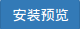
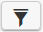
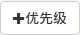

免责声明
本说明书依据现有信息制作,其内容如有更改,恕不另行通知。星环信息科技（上海）有限公司在编写该说 明书的时候已尽最大努力保证期内容准确可靠,但星环信息科技（上海）有限公司不对本说明书中的遗漏、 不准确或印刷错误导致的损失和损害承担责任。具体产品使用请以实际使用为准。
注释: Hadoop® 和 SPARK® 是ApacheTM 软件基金会在美国和其他国家的商标或注册的商标。 Java® 是 Oracle公司在美国和其他国家的商标或注册的商标。 Intel® 和Xeon® 是英特尔公司在美国、中国和其他国 家的商标或注册的商标。
版权所有 © 2013年-2016年星环信息科技（上海）有限公司。保留所有权利。
©星环信息科技（上海）有限公司版权所有,并保留对本说明书及本声明的最终解释权和修改权。本说明书 的版权归星环信息科技（上海）有限公司所有。未得到星环信息科技（上海）有限公司的书面许可,任何人 不得以任何方式或形式对本说明书内的任何部分进行复制、摘录、备份、修改、传播、翻译成其他语言、或 将其全部或部分用于商业用途。
1. TOS概述
Transwarp Operating System是为大数据应用量身订做的云操作系统。基于Docker和Kubernetes，TOS支持一键部署TDH，基于优先级的抢占式资源调度和细粒度资源分配，让大数据应用轻松拥抱云服务。未来企业对于构建统一的企业大数据平台 (Data Hub)来驱动各种业务具有强烈需求，统一的企业大数据平台需要提供以下功能：
一：资源弹性共享 - 提高资源利用率
-
灵活部署：Big Data + Application
-
资源调度：Auto-scaling + Self-healing
-
服务发现：Central Repository
二：隔离性 - 保障服务质量和安全性
-
数据隔离：Data Sources, Access Pattern, Confidential Levels
-
计算隔离：CPU, Memory, I/O
-
应用隔离
新生的TOS满足了以上企业大数据平台的需要，支持对星环科技的一站式大数据平台Transwarp Data Hub（TDH）的一键式部署、扩容、缩容，同时也允许其他服务和大数据服务共享集群，从而提高资源的使用率。TOS创新的抢占式资源调度模型 能在保障实时业务的同时，提高集群空闲时的资源占用，让批量作业和实时业务在互不干扰的情况下分时共享计算资源。
另外，在TOS上运行的TDH还引入微服务的架构，显著地降低了用户部署环境对TDH稳定性的影响，提高了部署的可用性，并且能让用户在不停机的前提下，享受到将来更新版本的升级以及修复。
1.1. Transwarp Operating System组成部分
Transwarp Operating System由以下四部分组成：
-
Ring 0 : Docker/Container
-
Ring 1 : Resource scheduler
-
Ring 2 : Built-in system services
-
Ring 3 : Central service repository (docker images)
1.2. Transwarp Operating System技术优势
Transwarp Operating System支持对TDH的一键式部署、扩容、缩容，同时也允许其他服务和大数据服务共享集群，从而提高资源的使用率。TOS创新的抢占式资源调度模型 能在保障实时业务的同时，提高集群空闲时的资源占用，让批量作业和实时业务在互不干扰的情况下分时共享计算资源。TOS支持：
自动部署：用户可以通过Web、REST API or CLI 一键瞬间安装和部署集群自动根据服务的依赖性安装所需的其他服务组件。
完善的多租户支持：Transwarp Operating System 通过重写资源管理框架实现了对CPU, Memory，硬盘和网络更好的隔离，下面是TOS与YARN和Kubernetes的对比：
自动调整容量：TOS 支持对TDH自动扩容和缩容，同时也允许其他服务和大数据服务共享集群，从而提高资源的使用率。TOS创新的抢占式资源调度模型 能在保障实时业务的同时，提高集群空闲时的资源占用，让批量作业和实时业务在互不干扰的情况下分时共享计算资源。
自动修复：TOS的Replicator模块负责检测集群规模，当集群中服务发生问题时可以另起一个服务实例实现集群的自我修复功能。
2. TOS一览
2.1. 交互界面
您需要拥有TOS中的用户名和密码来登陆：
登陆后您会看到TOS的 控制面板。页面顶部的选项可以带您进入TOS的其他功能页面，包括 应用列表 ， 集群管理 ， 租客管理 和 工单列表 。
控制面板 页面用于管理所有TOS中已经安装的应用：
应用列表 页面列出所有TOS支持的应用供安装：
集群管理 页面用于管理TOS下所有的集群以及集群中的节点：

租客管理 页面用于管理我的所有租客：
工单列表 页面用于向星环科技的支持人员发工单。
2.2. TOS涉及的概念
针对 TOS Market 中涉及到的相关名词，概念，我们会在本小节中一一列出，并加以解释和说明，帮助您更好的理解和使用TOS Market.
集群(cluster) 是用来运行应用程序的一组物理的、或虚拟的机器,以及其他基础设施资源的集合。
命名空间（namspace） 主要作用是资源隔离,将传统的全局资源变为某个命名空间的局域资源,使每一个namespace空间都拥有独立的一套系统资源。namespace一般有两种:一是用户(user)专有;二是组(group)共有,如果用户在某一组里,则可以使用该组的namespace。每个用户(user)都会有一个独有的namespace,用户在安装应用时可以选择应用的目标安装租户,也就是选择可用的namespace(在TOSMarket里,namespace又称为租户或租客)。
租客 就是namespace，租客可以是一个user，也可以是一个group，group中会包含多个user。 租客可以在多个cluster上有配额（资源使用权利）。
配额 是指租户在集群中的资源使用权利，包括优先级，cpu，memory，storage和network等方面的使用权，这将在章节5.4中详细介绍。
镜像（image） 是一个只读的模板,可以包含一个完整的 ubuntu 操作系统环境，里面仅安装了 Apache 或用户需要的其它应用程序。镜像是用来创建容器的,Docker提供了非常简单的方法来创建新的镜像,或者更新已经存在的镜像,或者你还可以下载他人已经创建好的镜像。
镜像仓库（registry) 主要用于保存镜像数据,你可以从这些公共的、或私有的仓库中上传或下载镜像。
容器（container） 类似于目录,它包括应用程序及其运行所需要的一切。每一个容器都是由镜像创建而来的,它可以被运行,启动,停止,移动以及删除,每一个容器都是一个孤立而安全的应用平台。
Pod 在大规模容器技术Kubernetes中是一个可以创建,调度和管理最小的基本单元。一个应用可以包含一到多个Pod,一个Pod也可以包含一到多个共享IP地址和存储空间的容器。
Label 是用于区分Pod、Service、Replication Controller的key/value键值对，仅使用在Pod、 Service、 Replication Controller 之间的关系识别，但对这些单元本身进行操作时得使用name标签。Label的格式为“key=value”，其中“key/value”可以是任意字符串。
3. 应用列表
应用列表页面列出所有TOS支持的应用以供安装。目前TOS支持的应用有：Zookeeper, Hbase, Terminal, Sqoop, HDFS, Yarn, Metastore, Inceptor, HUE, Monitor, Heapster, Redis, MongoDB, Proxy, RabbitMQ, Kafka, Influxdb, Mysql, WordPress, ElasticSearch, Discover, oracle, socksproxy以及用户自定义应用。
下面我们演示一些在应用列表页面可以执行的常见操作。
3.1. 安装应用
下面我们将分别演示如何安装配置简单的，无依赖关系的应用和复杂的，有依赖关系的应用。
3.1.1. Redis安装
Redis是一款配置简单的，且对其他应用没有依赖关系的应用，其安装步骤也较为简单。
在应用列表页面将鼠标悬浮于“Redis”上,会出现“安装/配置此应用”的提示：
点击后进入Redis应用信息页面（如下图），会显示应用名，应用版本，开发商以及应用的简介等信息，帮助你简单地了解一下Redis。
点击上图右上角的“安装”，系统会弹出下面的窗口：
在该窗口中，您可以选择 目标安装租户 ， 目标集群 以及 应用可见范围 。配置相关的参数将决定这个Redis应用将运行在哪个目标集群上，哪个目标安装租户将可以使用这个Redis应用，以及为哪些目标租户所见。
完成选择后点击“下一步”继续，进入Redis的配置窗口（如下图），您可以看到Redis的 基础属性 ，包括“应用租户信息”（在前面已经设置好）和“应用名称”。如果不另外指定应用名称，将使用系统自动生成的应用名。
在这个窗口中，您还可以配置Redis的 Redis配置 ， 高级配置 。
在 Redis配置 的窗口中（如下图），您主要可以设置Redis应用的优先级，主节点数量，以及可用的内存和CPU上限，默认值是内存上限为1G，CPU上限为1核，主节点数量为3，优先级为0（此优先级最低）。
在 高级配置 的窗口中（如下图），您需要设置“Redis镜像”，指明该应用是建立在哪个镜像的基础上的。您还可以通过点击来添加一到多个“Redis环境变量”。
完成上述配置确认无误后，您可以点击配置窗口右下角的，查看即将安装的Redis应用的各项配置（如下图）：
如需更改Redis的相关配置，则可以点击上图中左下角的“返回配置”，无需更改的话就可以直接点击右下角的“安装”，开始安装应用。安装完成后，您可以在控制面板中看到新安装的Redis应用。
3.1.2. Inceptor安装
Inceptor是一款配置相对复杂，对其他应用有较多依赖关系的应用，下面我们将在上述安装Redis的简单步骤的基础上，展示安装Inceptor不同的配置页面和步骤。
按照相同的步骤打开至Inceptor的配置页面（如下图）：
您会发现inceptor配置参数中，除了右边主页面会显示Inceptor相关配置，包括 基础属性 ， Master配置 ， Executor配置 和 高级配置 。
在上图中蓝色方框内，在正在安装的应用名（图例中为Inceptor）下，比安装Redis的配置窗口多出的一列应用名，这显示的是正在安装的应用（图例中为Inceptor）所依赖的应用。这些应用与Inceptor之间的依赖关系分为两种：
一是必选的依赖应用，对于这类应用，以Metastore为例，在下图的右上角打开一个下拉菜单，在进行配置时可以选择菜单中的“新建应用实例”，或者是选择菜单中的一个已存在的应用实例（图例中为metastore_eln3）：
当选择“新建应用实例”时，您必须要对已选的依赖应用Metastore的各种参数进行有效的配置，包括 基础属性 ， Metastore配置 ， MySQL配置 和 高级配置 。并且，“Metastore”这个应用名前的图标显示的是蓝色。
当选择已存在的应用实例时，如下图中的metastore_eln3，您就不需要再对Metastore进行配置，同时“Metastore”这个应用名前的图标会变成绿色（如下图）：
二是可选的依赖应用，对于这类应用，以Monitor为例，配置窗口右上角的下拉菜单中会比必选依赖应用的菜单中多一个“不安装此应用”的选项（如下图）：
当选择这一选项时，这个应用将不会安装到集群当中。同时，“Monitor”这个应用名前的图标会变成灰色（如下图）。
其他选项则和配置必选依赖的应用时相同。
您只有对Inceptor及其所依赖的应用的各项配置输入正确后，才能成功安装Inceptor。安装成功后，您就可以在控制面板中看到新安装的Inceptor应用以及在安装Inceptor应用中新安装的Inceptor依赖的应用。
3.2. 应用上架
您除了可以按照上述的步骤安装TOS Market提供的多种应用外，还可以根据自己的需要安装一些自定义的应用。您可以回到 应用列表 的主页面，点击页面右上角的“上架”（如下图）:
在弹出的窗口（如下图）中，您可以选择上架的应用类型，分别是“War包类应用”和“Image类应用”：
选择完成点击“确定”后，要填写新上架应用的 基本信息 （如下图），其中“应用名”和“版本”是必填项，“标签”和“描述”是选填项。
点击“下一步”后，会要求填写 设置用户配置项 (如下图),默认的配置项有“CPU”，“内存”，“节点个数”和“优先级” 。您可以根据自己的需要填写，也可以不加改动，使用默认值。
继续点击“下一步”后，会出现 启动设置 窗口（如下图），其中“镜像”是必填项，其他都是选填项。对于“环境变量”，“端口映射”，“数据卷绑定”等参数，都可以通过点击按钮来新增。
在上图的最后一行中，还可以选择“health check”的多种检测方式，分别为：“不做检测”，“HTTP请求检测”，“执行命令检测”和“TCP请求检测”。
最后，点击“完成”，就可以使新应用上架了。
4. 控制面板
4.1. 简单操作
在控制面板页面，您可以管理已经安装的应用。点击控制面板的左上角会出现一个下拉菜单，在菜单中您可以选择控制面板上已安装应用的排列方式，有按照集群分类、按照状态分类、按照namespace分类和不进行分类共4种排列方式：
点击页面右上角的  按钮，对控制面板上显示的应用按“集群”，“状态”，“namespace”的标签进行筛选：
筛选应用时，可以根据需要分别选择“集群”，“状态”，“namespace”下的0到多个标签进行组合，标签的组合规则是不同筛选条件：“集群”，“状态”，“namespace”之间取交集，同一筛选条件下的不同标签之间取并集，并集的结果作为上一级的筛选条件去与其他筛选条件取交集。若不对某一筛选条件做改动，则默认全选该筛选条件下的所有标签，也就是不把该条件作为筛选应用的条件。
下图是default集群下，且状态为“deploying”或“ready”的，另所属namespace为“user/docker@transwarp.io”的所有应用：
将光标移到控制面板上已经安装的任一应用上，应用右上角会出现一个“×”(如下图)，点击它可以直接删除应用：
4.2. Inceptor的管理
您也可以点击任意一个应用对它来进行管理，下面我们以Inceptor为例介绍应用管理。 点击控制面板上的一个Inceptor服务，您会看到Inceptor应用的管理页面：
点击右上角红色的“删除”按钮，可以删除当前Inceptor服务。TOS支持的应用中有一些有自己的监控界面，这些服务页面的“组件链接”就是应用监控界面的链接。 例如，点击“组件链接”对应的“Inceptor（4040）”，您将看到Inceptor的监控界面（如下图），在此界面上您可以查看该Inceptor应用的jobs及其他信息。
Inceptor应用的管理页面中的三个选项各对应一个标签页，当前标签页为“概述”。点击“配置”，可以进入配置标签页（如下图）：
配置标签页中有三个子页，可以分别用于设置Application Master的计算资源优先级和计算资源上限（如上图）、设置Executor的计算资源优先级和计算资源上限：
还需要设置Application Master和Executor的镜像（如下图），使用某一镜像时需要输入指定的镜像名，例如下图中的Master镜像：172.16.1.41:5000/lvlv/Inceptor：20160811-204500_rev36252.
点击“控制台”进入控制台标签页（如下图）：
我们能看到一张列表。表的第一列“Pod”显示当前Inceptor服务中的所有角色（Master和Executor）；“节点”列显示这些角色所在的节点的IP；“容器”下显示这些角色所使用的容器。
“容器链接”下，每个角色各有三个链接：“终端”是对对应角色执行操作的命令行的链接；“当前日志”是对应角色运行中产生的日志的链接；“Metrics采集”是对应角色的memory和cpu使用情况。
打开“终端”的“open”链接后会打开一个terminal（如下图），登陆到指定节点，然后就可以执行各种命令了。
打开“Metrics采集”的链接就会看到对应角色的memory和cpu使用情况（如下图），而且可以根据页面右上角不同的时间选项卡来查看不同周期下的使用情况。
5. 集群管理
进入集群管理页面（如下图）。在 主机 标签页可以看到TOS管理的集群的概况。
下面我们将主要介绍一些常见的集群管理操作。
5.1. 添加集群
在 主机 标签页，点击页面左上角的集群名（图例中为default）会出现一个下拉菜单（如下图），在这个菜单中您会看到当前的集群列表，您还可以点击蓝色的按钮 来添加一个新的集群。
点击后弹出如下的窗口：
创建集群首先需要填写的参数是“集群名”和“IP地址”,还需要指定集群的拥有者是“当前用户”还是其他“租户”，如果是租户的话则需要输入有效的租户名，并进行验证。
此外，您还需要指定集群的“Registry”，你可以使用默认的registry进行安装，还可以通过输入registry的地址和端口来指定已有的registry。
可选的连接方式有“ssh秘钥”和“root密码”两种。
上述参数配置完成后，可以点击“环境检查”来查看安装的环境情况，确认无误后点击“完成”开始安装。
5.2. 向集群中添加主机
在 主机 标签页，点击页面右上角的“新建”（如下图）可以向指定集群中添加一个新的主机，在弹出的窗口中输入新建主机的相关参数。
输入完成确认无误后点击“安装”。
5.3. 查看主机详情
将鼠标移到集群中的一台主机上可以看到关于这个主机的简略信息（如下图）。
点进去后可以查看到指定主机的详细情况（如下图），
上图中，可以清楚的看到页面左上第一行的当前主机中的标签， 通过点击页面右上角的搜索框打开一个下拉列表，列表中包括所有已有的标签，你可以根据需要选择添加。 或者您还可以增加新标签，通过在搜索框中按照“key=value”的格式输入标签值，其中“value”可以是任意字符串。输入后再点击“新标签”的按钮就可以生成，生成的新标签会加入已有标签列表。 在通过标签来筛选主机时，给出任意一个包含一到多个标签的组合，所有包含该标签组合的主机就会被筛选出来。
如果在当前页面有所改动（例如增加主机的标签），请先点击页面右上角的“保存”按钮后再退出。
在主机标签下面是一个包含 Pod , 状态 ， 容器 ， 容器CPU ， 容器内存 和 容器链接 等信息的列表，您可以查看每一个Pod的相关情况。
在页面的最下方，还可以看到当前主机被分配到的配额优先级，以及CPU，内存，网络和存储的使用情况，包括已使用量和总量，还会有一个直观的使用率的配图。
5.4. 创建新用户配额
在“配额”标签页可以看到TOS中用户的资源配额（如下图），新用户需要管理员创建配额以后才可以在自己的TOS账户中安装和使用应用：
您可以点击按钮  来为当前用户添加新的优先级，同时可以配置“priority”， “cpu”， “memory”， “storage” 和 “network”等参数。
还可以点击配额信息页面右上角的“新建”来新建配额（如下图）：
创建的Quota有两种，一是 user(为用户创建) ，二是 leasee(为组创建) ，分别需要输入“Email地址”或者“leasee名”来进行验证。
除此之外，还可以配置“priority”， “cpu”， “memory”， “storage” 和 “network”，这些参数都有默认值，例如“priority”的默认值为0，这是最低的优先级。
参数设置完成点击“保存”后，新建优先级不仅会出现在所属的用户名中，还会出现在页面下方的优先级汇总表中（如下图）。
您还可以点击上图中红色的“删除”按钮，来删除已有的优先级。
点击已有优先级的“priority”， “cpu”， “memory”， “storage” 和 “network”等任一参数就可以对已有的优先级进行修改（如下图）。
添加和设置好新用户的优先级后，该用户的配额即设置完成，该用户可以在自己的账户中添加并使用应用了。
6. 租客管理
租客管理 主页面（如下图）中显示的是当前登陆用户在整个default集群资源中的配额详情：

您还可以在上图右上方的搜索框中输入集群名以查找指定集群。
点击“租客”，可以查看目前用户所拥有的租客（如下图），列表中会有租客的基本情况，包括租客名，管理员Email，用户数以及简介。
您还可以在上图右上方的搜索框中输入租客名以查找指定租客。
点击相应的租户名，会显示相应租户的配额及所有用户，下图是group default的示例。
您还可以在页面右上方的搜索框中输入用户名以查找指定用户。
7. 工单列表
在工单列表中，您可以通过创建工单向星环科技寻求技术支持：
点击可以打开一个新工单创建窗口：
在该窗口中填入新工单的信息，然后点击创建便可以创建一个新的工单。
[ticket]左侧是当前的工单，点击这些工单，页面右侧会出现工单的细节，包括工单内容、管理员回复和用户回复，您也可以在右侧加入新的回复。
8. 客户服务
技术支持
感谢你使用星环信息科技（上海）有限公司的产品和服务。如您在产品使用或服务中有任何技术问题，可以通过以下途径找到我们的技术人员给予解答。
email: support@transwarp.io
技术支持热线电话：18930357653
官方网址 ：www.transwarp.io
意见反馈
如果你在系统安装，配置和使用中发现任何产品问题，可以通过以下方式反馈：
email: support@transwarp.io
感谢你的支持和反馈，我们一直在努力！